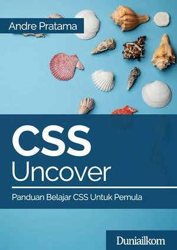

HTML adalah bahasa standar pemrogaman yang digunakan untuk membuat halaman website, yang diakses melalui internet. Singkatan dari "Hypertext Markup Language" atau "bahasa markup"
Dilansir Techterms, "Hypertext" mengacu pada hyperlink yang mungkin terdapat dalam halaman HTML. Bahasa markup ini mengacu pada cara tag yang digunakan, untuk menentukan tata letak halaman dan elemen di dalam halaman.
CSS Uncover Panduan Belajar CSS untuk Pemula

CSS adalah singkatan dari cascading style sheets, yaitu bahasa yang digunakan untuk menentukan tampilan dan format halaman website. Dengan CSS, Anda bisa mengatur jenis font, warna tulisan, dan latar belakang halaman.
CSS digunakan bersama dengan bahasa markup, seperti HTML dan XML untuk membangun sebuah website yang menarik dan memiliki fungsi yang berjalan baik. CSS juga berguna untuk mengatasi keterbatasan HTML dalam mengatur format
halaman website
JavaScript Uncover Panduan Belajar JavaScript untuk Pemula
Javascript adalah bahasa pemrograman yang bisa membuat internet bekerja. Lebih lengkapnya, Javascript adalah bahasa pemrograman yang ringan, bersifat dinamis, dan dapat diarahkan untuk oriented programming maupun functional
programming.Javascript biasanya digunakan untuk melakukan perubahan tampilan website, seperti ketika mengklik tombol, menentukan layout, ngasih efek dinamik atau animasi yang lucu-lucu dan menarik. Bagi mereka yang sudah ahli,
penggunaan Javascript bisa dimanfaatkan buat bikin game yang advanced plus animasi 2D dan 3D, juga aplikasi yang berhubungan dengan database,
PHP Uncover Panduan Belajar PHP 8 untuk Pemula
PHP (PHP: Hypertext Preprocessor) adalah sebuah bahasa pemrograman server side scripting yang bersifat open source. Sebagai sebuah scripting language, PHP menjalankan instruksi pemrograman saat proses runtime. Hasil dari
instruksi tentu akan berbeda tergantung data yang diproses. PHP merupakan bahasa pemrograman server-side, maka script dari PHP nantinya akan diproses di server. Jenis server yang sering digunakan bersama dengan PHP antara lain
Apache, Nginx, dan LiteSpeed. Selain itu, PHP juga merupakan bahasa pemrograman yang bersifat open source.
Ahmad Januar Amri
Universitas Teknokrat Indonesia
Informatika